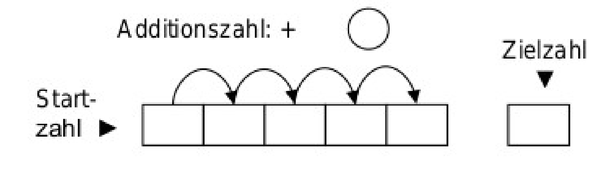

Diese Aufgabe kann im 3./4. Schuljahr gestellt werden:
Wählt eine Startzahl, die ihr in das erste Feld schreibt. Dann wählt eine Additionszahl und schreibt sie in den «Additions-Kreis». Die Additionszahl wird zu Startzahl addiert und das Ergebnis ins Feld rechts daneben geschrieben. Dazu wird wieder die Additionszahl addiert usw. Wenn alle fünf Felder ausgefüllt sind, werden alle Zahlen addiert und das Ergebnis wird im rechten Feld notiert. Könnt ihr Start- und Additionszahl so wählen, dass ihr 50 trefft?
Mathematischer Ansatz:
Sei \( x \) die Startzahl und \( d \) die Additionszahl.
Die 5 Felder enthalten: \( x, (x+d), (x+2d), (x+3d), (x+4d) \).
Die Summe ist:
$$ S = 5x + 10d = 50 $$Teilen wir die Gleichung durch 5:
$$ x + 2d = 10 $$Mögliche Lösungen (für natürliche Zahlen):